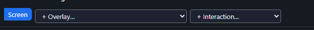
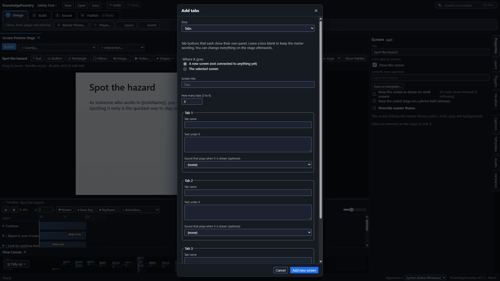
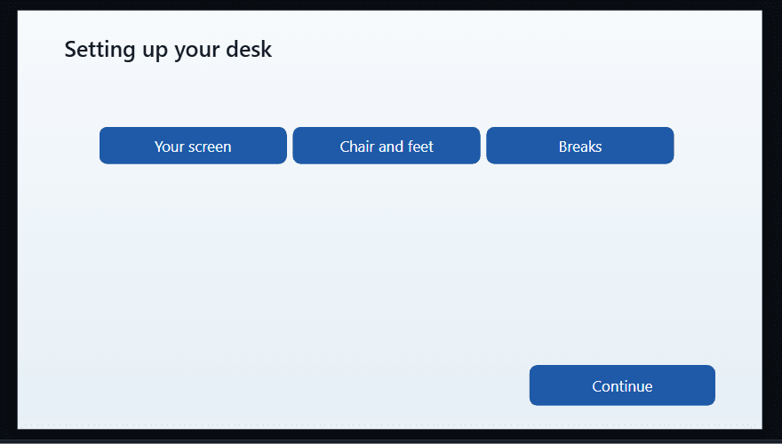
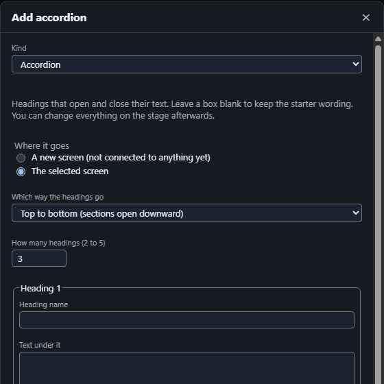
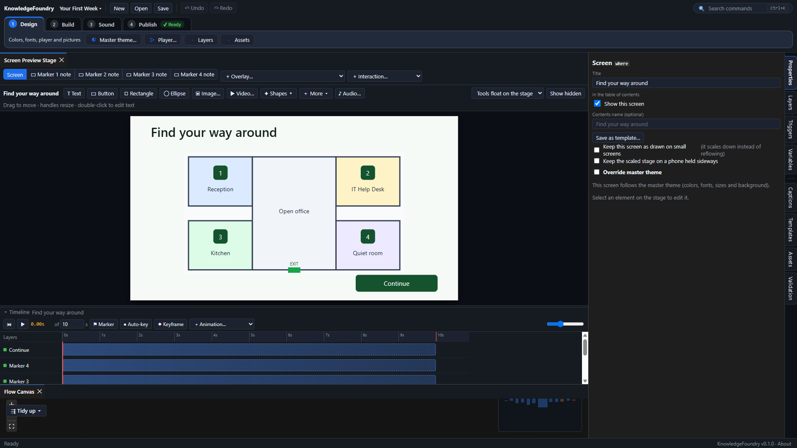
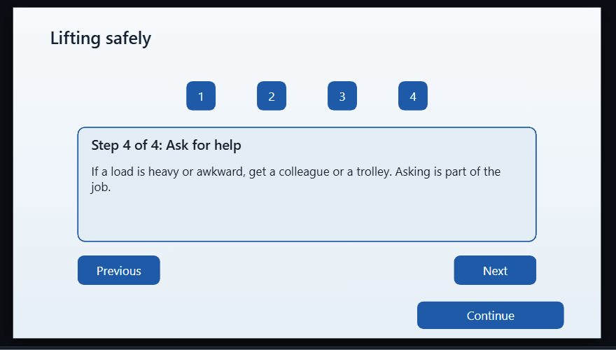

Add tabs, an accordion, flash cards, a timeline and more (interactions)
These are ready-made starting points. To add one to a screen, select the screen and choose + Interaction… in the strip above the stage (next to + Overlay…). To add one as a new screen, choose Interaction… in the Build toolbar or the command search (Ctrl+K), or right-click an empty spot on the Flow Canvas (it lands where you clicked). A short form asks where it goes (a new screen that is not connected to anything yet, or the selected screen) and what you want it to say: how many tabs or headings and their names and text, the two sides of a flip card, the dates and events of a timeline, the markers of a labeled graphic, the steps of a process, or the descriptions and caption of a picture. Plugins can add more kinds, and they appear in the same list. Leave a box blank to keep the starter wording; you can change everything on the stage afterwards.


- Tabs: tab buttons across the top, one panel each. Choosing a tab shows its panel.

- Accordion: a stack of headings. Choosing one opens its text and slides the headings after it out of the way; choosing it again closes it and they slide back. In the form you choose whether the headings go top to bottom or side by side (tall strips with the label turned sideways) on computers and tablets. On a phone the choice is made for you: held upright it is always top to bottom, one column that scrolls, and held sideways it is always side by side. To make that work the accordion is built in both layouts. The stage shows only the layout you chose; the other layout's items are in the Layers panel, and you change their wording there or by selecting them from Layers. Each accordion adds a number variable (accordion, accordion2...) that remembers which section is open; leave it alone. The accordion also turns on Keep the scaled stage on a phone held sideways in the screen's Properties; that is what lets the phone show the side-by-side layout.

- Flash cards: a deck of 2 to 10 cards on one screen, for a quick review. Each card has a front and a back; choosing the card turns it over. Previous and Next move through the deck, a line such as "Card 3 of 10" shows where you are, and Next on the last card says Start over. You type the front and back of every card in the form before it is added.
- Picture that opens larger: a small picture; choosing it opens a big one with a caption in a pop-up.
- Timeline: 2 to 8 events in order along a line. Name each with a date or a word (such as 1990), and write what happened. Choosing an event shows its text in a panel below it. The events are in time order, which is also the order a screen reader reads them.
- Labeled graphic: a picture with numbered markers. In the form, say what the picture shows and name each part (the name is what a screen reader says for the marker) and write a note about it. After it is added, choose the picture on the stage and drag each marker onto the part it labels. Choosing a marker opens its note, which has a Close button.

- Process steps: 2 to 7 numbered steps shown one at a time, with Previous and Next. The learner can also choose a step by its number. Previous is switched off on the first step and Next on the last. It adds a number variable (process, process2...) that remembers which step is showing; leave it alone.

An interaction is made of ordinary items, overlays and triggers, so change it the usual way. Edit the words on the stage, move or restyle the buttons, add more tabs by copying a tab, its panel (Triggers shows how they connect) and its trigger. To see how a tab works, open Triggers: choosing a tab shows its panel, hides the others and marks the tab Selected. Replace the placeholder alt text on a picture with a real description.
Each new interaction lands in the middle of the screen, over other things. Move it where you want it. Add it once and copy it rather than adding it again, because every one adds its own overlays and triggers.